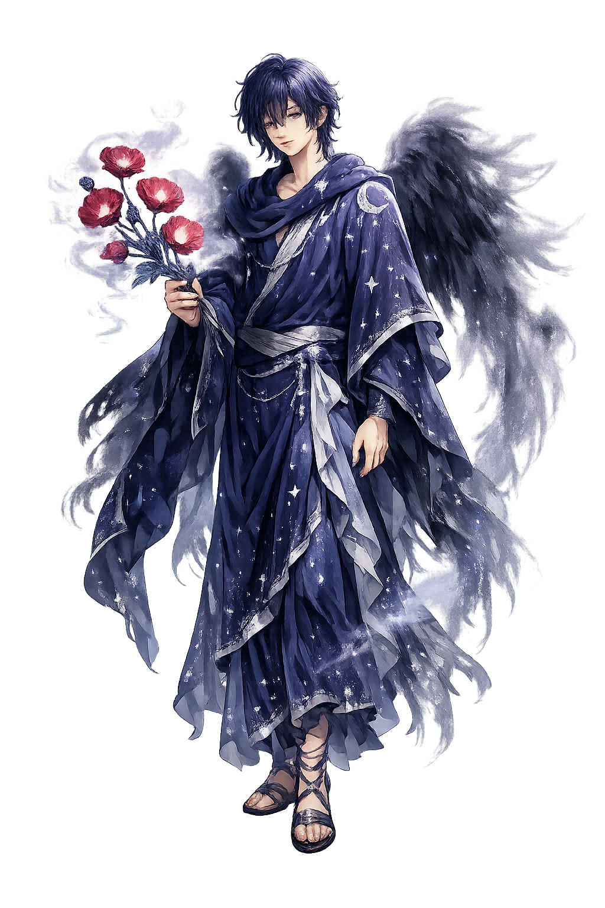
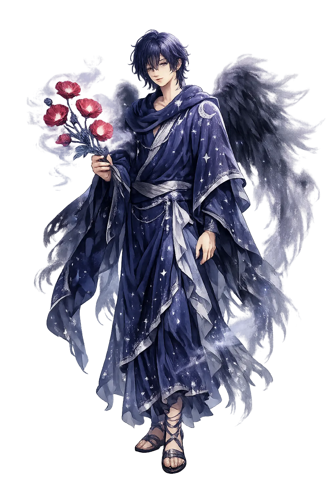

Ancient Domain
Hýpnos is the personification of sleep, the gentle twin of death who brings rest to gods and mortals. He moves through the world on silent wings, touching tired eyelids with a branch or a whisper.
Extended Lore
Etymology · Phonology · Orthography · Cultural Legacy · Primary Sources

Essential information about Hýpnos, Sleep
From original script to Unicode restoration
Hýpnos is Tier 2 because the Greek Ὕπνος preserves the acute stress on the first syllable but has no long vowel. He and his twin Thánatos are children of Night (Nyx) and live near the sunset.
Character-by-character philological analysis
| Character | Unicode | Name | Block | Phonetic Role |
|---|---|---|---|---|
| H | U+0048 | Latin Capital Letter H | Basic Latin | H uppercase |
| ý | U+00FD | Latin Small Letter Y with Acute | Latin-1 Supplement | Acute on y |
| p | U+0070 | Latin Small Letter P | Basic Latin | p same |
| n | U+006E | Latin Small Letter N | Basic Latin | n same |
| o | U+006F | Latin Small Letter O | Basic Latin | o same |
| s | U+0073 | Latin Small Letter S | Basic Latin | s same |
The Tier 2 classification reflects how much of the original phonology this restoration preserves — stress and vowel length for Greek names, distinctive letters and diacritics for every other tradition.
From ancient cult to modern Unicode
Hýpnos is the personification of sleep, the gentle twin of death who brings rest to gods and mortals. He moves through the world on silent wings, touching tired eyelids with a branch or a whisper.
The Romans identified Hypnos with Somnus, whose mythology largely mirrors the Greek. In later antiquity he was associated with Morpheus, the dream-shaper, and with the Cimmerian cave as a portal to the underworld. Christian writers demonized pagan sleep-deities but retained the poppy and the winged image in depictions of Death. Modern psychology has reclaimed Hypnos through the term 'hypnosis,' though the connection is more romantic than clinical.
Hýpnos lives in the word 'hypnosis' and in every lullaby, sleeping pill, and bedtime ritual. He is the god of the third of life we spend unconscious, the realm where memory, fear, and desire recombine. In art he appears as a beautiful winged youth, sleep's beauty made visible. His twinship with Thanatos reminds us that every sleep is a small rehearsal for death.
Restoring Hýpnos in a domain name is more than orthographic accuracy. It is a statement that the internet should recognize the full range of human writing — not only the ASCII keyboard.
Common questions about Hýpnos, Sleep, and Unicode restoration
In reconstructed pronunciation, Hýpnos is /hýp.nos/ — approximately 'HOOP-nohs' — the first syllable is pitched high and begins with a rough 'h'; the second is short and level..
Hýpnos means Sleep in the greek tradition.
Hýpnos is associated with Poppy (The soporific flower associated with sleep and dreams), Wings at the temples (The swift arrival of sleep and its power to lift the soul into dream), Branch or horn (The wand with which he sprinkles sleep upon the eyes), Dark mist (The shadowy garment in which he wraps the sleeper).
Plain ASCII hypnos strips the stress, length, and script that make the name specific. Unicode restoration returns the name to its original written dignity.
In Iliad 14, Hera asks Hypnos to lull Zeus to sleep so she can aid the Greeks. Hypnos recalls an earlier occasion when Zeus had hurled him from heaven in anger and demands a guarantee. Hera promises him Pasithea, one of the Graces, and he agrees. He pours sleep over Zeus's eyes while the god embraces Hera on Mount Ida.
The philological foundations of this restoration
Every claim on this page is grounded in established scholarship. The orthographic restorations follow disciplinary convention. The etymological chain follows the best available reference works. This is not invention — it is resurrection through scholarship.
You have traced the name from its earliest attestation to its Unicode restoration. Now return to the myth. The story is where the name lives.
Back to Lore